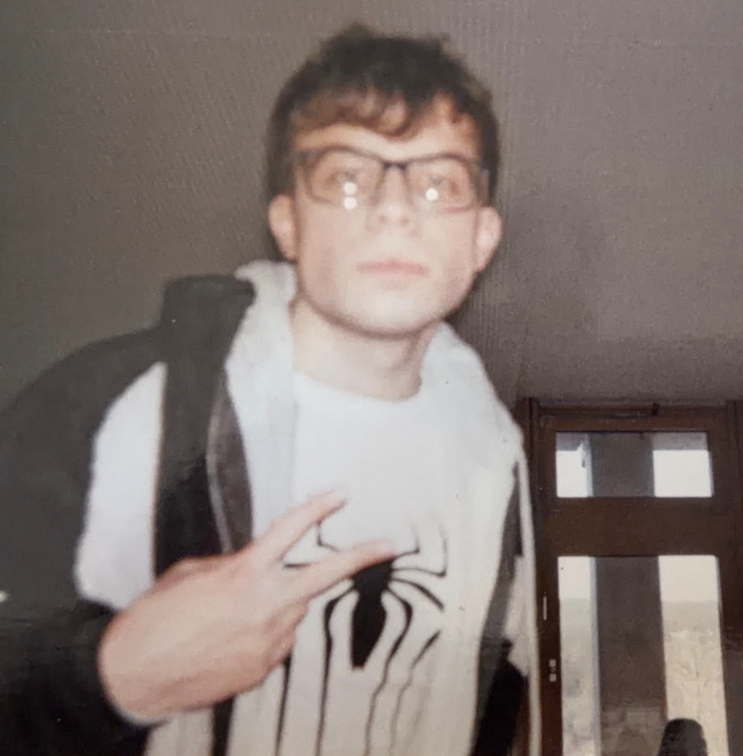

The Daily Segfault
MERT KÜÇÜKHÜSEYİN · VOL. I · NO. 01
THE DEVELOPER, WHO IS (STILL) LEARNING
Oct 3, 2026 (1)

Picture taken in 2025.
Name: Mert
Age: 19
A creative mind from Germany, who learned programming during the Covid-Era (2020). Started off with Discord bots, has since dived into low-level.
19 years old, worked on countless projects, like his own FOSS¹ organization; cherries.works.
From Türkiye
Jack of all Trades.
Master of some.
He builds his own stuff from the ground up.
If there is something, ANYTHING, he creates it himself.
5 projects, 10+ stars², 1.000+ commits this year.
Who is he?
¹ Free-Open-Source-Software, ² GitHub Metric, similar to a "Like"